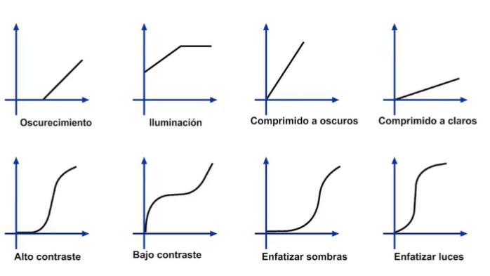

Conceptos Basicos
Imagen Digital Bi-Dimensional
Están compuestas por entidades geometricas simples, se pueden cambiar de escala sin afectar su resolución
BitMap
Filtrado dominio espacial 26/10/21
Realce
El principal objetivo del realce es procesar una imagen para
que el resultado sea más adecuado para una aplicación especifica.
Suelen haber dos categorias para las tecnicas de realce, en el dominio espacial y
el dominio frecuencial.
En el dominio espacial se refieren al plano de la imagen misma, y está basada en la manipulación directa
de los pixeles.
En el dominio frecuencial está basado en modificar la transformada de fourier de la imagen.
La transformada de Fourier por tanto era un tipo de suma ponderada de señales sinusoidales para
representar una señal objetivo.

Las transformadas de Fourier son una forma de realizar una convulución del dominio temporal, en el dominio frecuencial esa convolución se traduce a una multiplicaciones simple de polinomios. Por tanto en un problema que requiere convolución es normal pasarlo al dominio frecuencial realizar la operación pertinente y luego regresarnos mediante la transformada inversa.
Operaciones Puntuales - Umbralización
La operación más simple es cuando el operador T sólo actua en un vecindario de pixel 1x1 en la imagen de entrada, es decir F(x,y) solo depende del valor de F en (x,y). Se conoce como transformacion de escala de gris.
Uno puede aplicar distintos operadores punto a punto para la umbralización, estos pueden ser:
Ecualización del histograma
Es una tecnica para mejorar la apariencia de las imágenes, mediante la manipulación del histograma, buscando que este tenga una distribución uniforme en todo el rango de intensidades.

Operaciones locales
El dominio espacial se denota por la expresión: g(x,y) = T[f(x,y)] , donde f(x,y) es la imagen de entrada, g(x,y) es la imagen procesada y T es el opreador en f definido sobre un vecindario (x,y)

En general utilizan la operación de convulución en señales bidimensionales para señales discreta y periodicas.
En una mascara puedo hacer distintas operaciones, como puede ser una reflexión, rotación, etc. Para el caso de rotación si tengo una matriz de 3x3 de la siguiente forma [1 2 3; 4 5 6; 7 8 9] tendré una reflexión de la forma [9 8 7; 6 5 4; 3 2 1].

Una vez obtenida la mascara lo que puedo hacer es multiplicar punto a punto y sumo los valores para obtener el valor del pixel
en cuestión.
Filtros lineales de suavizado
Estos filtros en general corresponden al promedio de un vecindario
definido por una máscara, son filtros pasabajos.
Reducen el ruido pero también suavizan los contornos o bordes

La segunda mascara tiene un comportamiento gausiano dandolemás valor al pixel central.
Se muestra por tanto diferentes suavizados con distintos tamaños de mascaras, de tamaño 3 5 9 15 y 35:

Al aumentar el tamaño de la mascara, se puede decir que se reitera ventanas pequeñas, es decir,
que una mascara de ventana 15 reitera varias veces mascaras de ventana 3.
Al realizar un filtrado, información se pierde en el proceso y no se puede revertir un filtrado.
Filtro no-lineales de orden estadístico
Son filtros cuya respuesta está basada en el orden de los pixeles contenidos en el área de la imagen
- Mediana
- Maximo
- Minimo
- Moda
Una comparación entre filtro por promedio y mediana se ve a continuación:

Claramente el filtro por mediana mejora la visualización de los elementos de la imagen a la cual
se le ha añadido ruido. Pero este resultado no es lineal debido a que no se obtiene el mismo
resultado si se aplica la mediana primero en x y luego en y y viceversa.

Filtro de Realce
El objetivo de estos filtros es resaltar detalles finos o realzar detalles que han sido difuminados.
El realce es similar a la diferenciación espacial. Derivada de primer orden en una dimensión:
df/dx = f(X + 1) - f(x)
Derivada de segundo orden en una dimensión: d^2t/dx^2=f(x + 1) + f(x - 1) - 2f(x)
Es un filtro derivativo isotrópico, definido por:


Podemos obtener distintas implementación de máscaras del laplaciano como se observa en la imagen de arriba, sin embargo siempre la suma debe ser 0.
Podemos aplicar realce a los contornos de cualquier imagen

Uso de la primera derivada en realce
Se utiliza la magnitud del gradiente. Para una función f(x,y), el gradiente de f en las coordenadas (x,y ), está definido por:

Filtro de Sobel
Utiliza dos máscaras o filtros: una para detectar los bordes verticales y otra para
detectar los bordes horizontales.
Así, para obtener los bordes completos se realiza la suma de las imagenes que resultan con los bordes verticales y
horizontales


Filtro de Prewitt
Consta de 8 matrices que se aplican pixel a pixel a la imagen. Luego se suman las imagenes para obtener los bordes bien marcados.
Detector de Bordes de Canny
No es una operación punto a punto como las anteriores, pero es una función completa para realizar un filtrado.
Utiliza un algortimo de múltiples etapas para detectar una amplia gama de bordes en las imagenes.

Modelos de Color
Los modelos de color son formas de representar las imagenes, normalmente se utiliza RGB, , pero existen otros modelos como BRG, CYM y demás.

Existen 3 planos para cada color, por tanto la adición de los planos representa el color de la imagen R+G+B .
Asignarlos como 0 un plano no evita que la imagen sea a color, para eliminar un color por completo es preferible borrar el plano.
Existen dos categorías de proceso:
- Cada componente de la imagen se procesa individualmente y finalmente se forma la imagen de color procesada a partir de las componentes.
- Se trabaja con los píxeles en color directamente
Suavizado de imagenes en color
El filtro promedio es un filtro de suavizado definido por:

Donde S_xy las coordenadas del vecindario centrado en x,y
Realce de imágenes en color
Empleamos la técnica que utiliza el laplaciano